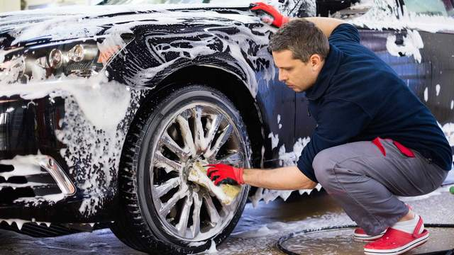
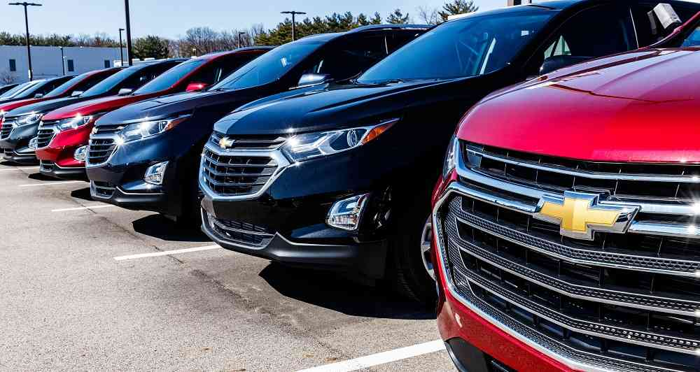

LAVADO DE CARRO

Un lavado autoservicio es un establecimiento dedicado a la limpieza de automóviles por los propios usuarios, operando los equipos ellos mismos y con arranque de los medios de lavado por prepago ya sea mediante monedero, ficha o tarjeta.
ALQUILER DE CARRO
Una agencia de alquiler de coches, rent-a-car o car hire es una compañía que ofrece automóviles de alquiler para cortos o largos períodos de tiempo. Sus establecimientos están situados sobre todo, en las inmediaciones de aeropuertos, estaciones de trenes y autobuses. Se complementan a menudo con un sitio Web permitiendo hacer reservas a través de Internet. Existen también sitios Web, como las agencias de viajes on-line, que comparan precios de las agencias principales de alquiler de coches.
VENTA DE CARROS

Después de haber definido el valor de su coche para la venta, lo siguiente es crear un anuncio de coche lo suficientemente atractivo en una página de coches de segunda mano. Para potenciar la efectividad de un anuncio de coche, en CARFAX hemos resumido para usted algunos de los aspectos más importantes a la hora de anunciar un coche.